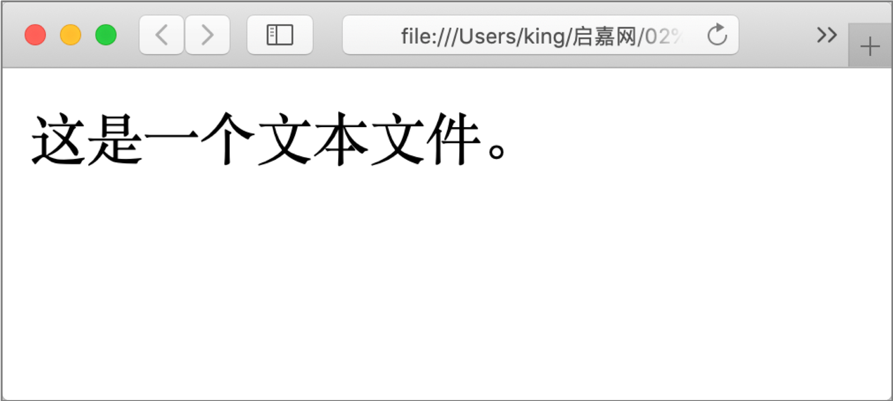
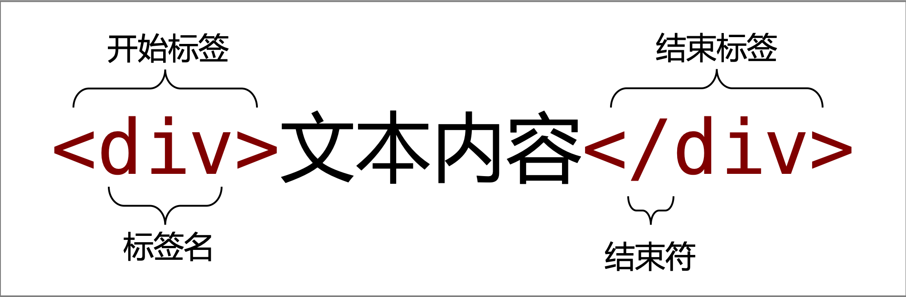

本文是《HTML5与CSS3基础语法自学教程》的第一篇，首发于【前端课湛】微信公众号。
导读：本小节主要讲解 HTML 的基本信息，其中包含 HTML 概念、HTML 发展历程和 HTML 标准版本的发展历程。通过本小节的学习可以对 HTML 的含义有个初步的理解，为后续进一步学习 HTML 相关概念打下基础。
HTML 是个缩写形式，其全称为 Hyper Text Markup Language，翻译成中文的含义为 超文本标记语言。HTML 不是一门编程语言，而是一门标记语言，因为 HTML 是由一系列的 元素 组成，这些元素可以包含文本、超链接等不同内容。
如下示例代码是展示了基本的 HTML 结构：
<!DOCTYPE html>
<html lang="en">
<head>
<meta charset="UTF-8">
<title>HTML基本结构</title>
</head>
<body>
<h1>这是最基本的HTML结构</h1>
</body>
</html>提示：上述示例代码的具体含义会在后续章节中进行讲解，这里仅作为展示。
想要对 HTML 的概念进一步了解的话，需要将概念分成 超文本 和 标记语言 两部分进行分别学习。
首先，先来讲一讲有关超文本的含义。HTML 最早是由文本发展而来的，关于文本我们一般是比较熟悉的。例如我们创建一个扩展名为.txt的文件，并编写如下示例内容：
这是一个文本文件。这样就创建了一个文本文件。现在我们将这个文本文件的扩展名修改为.html或者.htm，这样这个文本文件就变成了一个 HTML 文件。通过浏览器运行是可以显示这个 HTML 文件的内容了，如下图所示：

说明：上述示例中的 HTML 不是标准的 HTML。因为 HTML 的语法是松散型的，所以浏览器是可以正确解析并运行的。
随着 HTML 的发展，到目前为止已经不仅仅是文本内容这么简单，还可以显示图片、链接、音乐，甚至视频等更复杂的内容。
理解了 超文本 的含义，接下来我们再来看看 标记语言 要如何来理解。首先，我们来看这样的一个描述：
标记语言，是一种将文本以及文本相关的其他信息结合起来，展现出关于文档结构和数据处理细节的电脑文字编码。与文本相关的其他信息（包括例如文本的结构和表示信息等）与原来的文本结合在一起，但是使用标记进行标识。
—— 摘自【百度百科】
百度百科上关于 标记语言 的描述是比较抽象地、比较难懂地。我们可以这样简单地来理解 标记语言 的含义。标记语言 中的 标记 指的就是 HTML 中的元素（Element），而 HTML 就是由这样的一系列元素组成的，所以被称为 标记语言。
如下图所示展示了一个 HTML 元素的结构：

注意：HTML 的元素是给定的。无论是 HTML 元素的数量，还是 HTML 元素的作用都是固定不变的。换句话讲，我们学习 HTML 简单来说就是学习 HTML 元素的含义、作用以及用法等内容。
理解了 HTML 的概念之后，我们再来介绍有关 HTML 的发展历程。
提示：这部分内容了解即可，毕竟对我们学习 HTML 本身是没有任何影响的。
早在 1989 年，蒂姆·伯纳斯-李为使世界各地的物理学家能够方便的进行合作研究，创建了使用于其系统的 HTML。蒂姆·伯纳斯-李 设计的 HTML 是以纯文字格式为基础，可以使用任何文本编辑器处理，最初仅有少量标记（TAG）而易于掌握运用。
随着 HTML 使用率的增加，人们不满足只能看到文字。1993 年，还是大学生的 马克·安德生 在他的 Mosaic 浏览器加入 <img> 标记，从此可以在 Web 页面上浏览图片。
但人们认为仅有图片还是不够，希望可将任何形式的媒体加到网页上，因此 HTML 得以不断地扩充和发展。
自 1993 年之后 HTML 出现真正意义上的第一版，发展到至今，经历了 5 个大版本的更新和迭代。具体每个版本发布的时间如下：
名词解释：
- IETF 是简写形式，其全称为 The Internet Engineering Task Force，翻译成中文的含义为 互联网工程工作小组。成立于1985年底，是全球互联网最具权威的技术标准化组织，主要任务是负责互联网相关技术规范的研发和制定，当前绝大多数国际互联网技术标准出自IETF。
- RFC 是简写形式，其全称为 Request For Comments，翻译成中文的含义为 请求评论。 是一系列以编号排定的文件，包含了关于 Internet 的几乎所有重要的文字资料。
- W3C 指 万维网联盟（World Wide Web），1994 年 10 月在麻省理工学院计算机科学实验室由 蒂姆·伯纳斯-李 创建，是 Web 技术领域最具权威和影响力的国际中立性技术标准机构。
在 HTML 版本发展历程中，大部分的版本都离我们远去了，也就是说我们并不关心，而需要关心的是 4.01 和 5 这两个版本。5 版本是 HTML 目前最新版本，也就是我们现在常说的 HTML5，而且现在学习 HTML 都是针对 5 这个版本进行学习的。
反而需要特别关心的是 4.01 版本。因为 4.01 版本依旧存在于一些较老的网站或者系统中，如果将来你的工作是对这些网站或者系统进行升级工作的话，那么就需要了解 4.01 这个版本的内容。
说明：在学习 HTML 的过程中，还需要注意 4.01 版本和 5 版本之间的差异。主要内容就是更新到 5 版本之后，删除了哪些内容，新增了哪些内容等。
本小节从 HTML 的概念开始讲解，然后又讲解了 HTML 的发展历程和 HTML 版本的发展历程等内容。其中：
预告：下一节，我们将通过创建第一个 HTML 页面，来学习 HTML 的基本结构、声明、元素以及注释等内容。